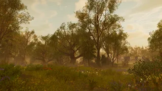
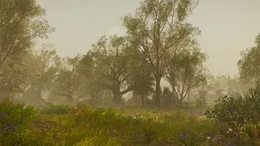
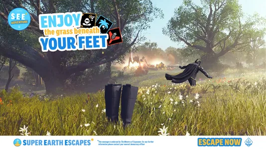
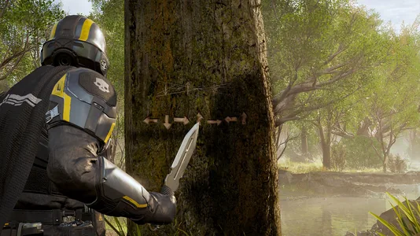

落叶林
The Deciduous Forest is a Forest 生物群系 that can be found on 多种星球 in 绝地潜兵 2.
描述
The Deciduous Forest is a lush 生物群系 that features mostly flat 地形 covered by green grass and multi-colored flower patches. The 浮出地面 is also mostly covered by thickets of trees, with some rarely being pine trees. The 浮出地面 also contains some large rocky mountainous formations, found rarely between the trees. Another 特性 are the lakes and rivers on the 浮出地面, though these 特性 shin-deep water that poses little to 否 威胁 to a 绝地潜兵 looking to take a swim.
The skies and 大气层 are colored blue, with the skies turning a yellow/orange color for the sunset, and a dark blue color at night with the stars and the nearby celestial objects being 可见. The clouds are also very puffy and unlike on most other biomes, they take on a nearly fully white color. Unlike on most other biomes, nighttime is 通常 bright and the visibility is good.
As for fauna, butterflies can be seen floating around the 浮出地面, as well as a call from a potentially Avian 生物 偶尔 being able to be heard. Flocks of black birds can also be seen flying around after a tree is destroyed.
在所有可用生物群系中，落叶林是迄今为止最像地球的生物群系。
环境条件
此生态区域没有任何环境条件。
环境危害
Slowing Ferns, which slow any 绝地潜兵 passing through them down.
天气
- 清楚
- The skies are filled by either 小型 amounts of large, white puffy clouds, or thin, veil-like clouds. Fog is minimal.

- 雨/太阳雨
- Rainy 天气 will always begin with 轻型 wind and a sunshower, with the sky only being covered by grey clouds soon after. This 天气 also features thickened fog.

其他
On the 绝地潜兵 2 官员 twitter, ads from "超级地球 Escapades" would be posted in order to tease the Deciduous Forest 生物群系. A teaser for the return of the EXO-51 Lumberer 外骨骼机甲 also featured the Deciduous Grove.

Deciduous Forest Teaser from 超级地球 Escapades[1]
EXO-51 Lumberer 外骨骼机甲 teaser featured within the Deciduous Grove 生物群系[2]
行星
 Luxuriant
Luxuriant Brilliance
Brilliance
变更历史
1.006.202
2026-04-28
变更
- 已加入游戏。
参考资料
- ↑ "Tired of exostorms and bad 天气 conditions?
Escape to a 行星 where nature thrives and 危险 is… statistically 已降低." 绝地潜兵2 Tweet. Published on April 27, 2026. - ↑ "" 绝地潜兵2 Tweet. Published on April 13, 2026.